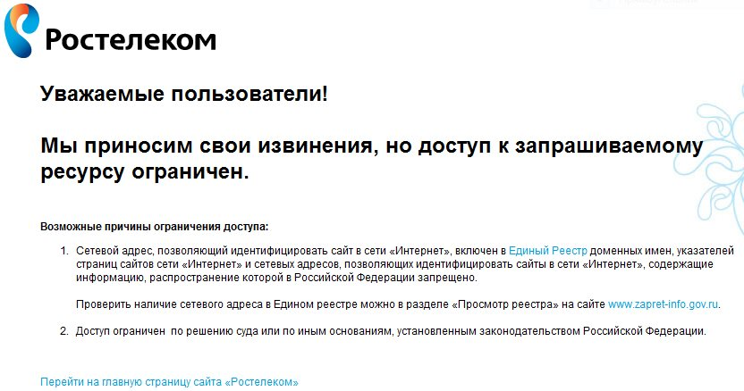

заБТимся о проекте
Солдатов Анатолий

Инфраструктура
-
Администрирование
-
Разработка -
Безопасность -
Архитектура -
CI/CD -
Работа с данными
Зачем нужна инфраструктура
ГИС ЖКХ
Что общего у базиста и аналитика?
Правильный ответ
Данные. И тем и другим нужны данные.

Кому нужны данные?
Данные нужны всем (смотри предыдущий слайд). Но доступ только у инфраструктуры все идут к инфраструктуре.
-
Разработчик
Нужно разобраться, почему не работает поиск по сайту -
Аналитик
Нужно сделать отчет для министерства -
Поддержка
Нужны данные о руководителе организации для разбора обращения от пользователя
Прототип за ночь
Боты
Jirabot
1. Интерфейс – JIRA
4. Не банят :)


Telegram
1. Интерфейс – Telegram
2. Банят, но не совсем :)
Highload
Jirabot
@app.route('/')
@login_required
@log_action
def tasks():
# parse helpdesk tasks
jira = get_jira_connection('helpdesk')
task_list = list()
task_list += jira.parse_issues(JIRA_HELPDESK_SEARCH_CONDITION)
# parse lanit tasks
jira = get_jira_connection('lanit')
try:
task_list += jira.parse_issues(JIRA_LANIT_SEARCH_CONDITION)
except IndexError:
pass
return render_template('tasks/tasks.html', tasks=task_list), 'Rendering template tasks/tasks.html'
@app.route('/get_query_cost', methods=['GET'])
@login_required
@log_action
def get_query_cost():
arguments = request.args.to_dict()
try:
c = get_database_connection(arguments['dbname'])
cost = c.get_query_plan(arguments['query'])
except Exception as e:
resp = {"result": {
"message": str(e)
}}
return jsonify(resp), str(e)
resp = {"result": {
"message": cost[0][0][0]['Plan']['Total Cost']
}}
return jsonify(resp), 'Task finished.'
Telegram
# Создание задачи: имя задачи в Jira; имя базы данных; текст запроса
# Удаление задачи: имя задачи в Jira
def handle_updates(updates):
for update in updates["result"]:
try:
text = update["message"]["text"]
chat = update["message"]["chat"]["id"]
try:
jira_task, database_name, query = text.split(";")
jira_task = re.sub(r"\s+", "", jira_task)
database_name = re.sub(r"\s+", "", database_name)
except Exception as e:
jira_task, database_name, query = [text, None, None]
database_result = db.get_items()
jira_tasks = [task[0] for task in database_result]
print(jira_tasks)
if text == "delete":
keyboard = build_keyboard(jira_tasks)
send_message("Select task to delete", chat, keyboard)
elif jira_task in jira_tasks:
db.delete_item(jira_task)
elif jira_task is not None and database_name is not None and query is not None:
db.add_item(jira_task, database_name, query)
except KeyError:
pass
Jirabot
Telegram
PROFIT
Спасибо за ваше время!
А еще у меня есть стикеры :)